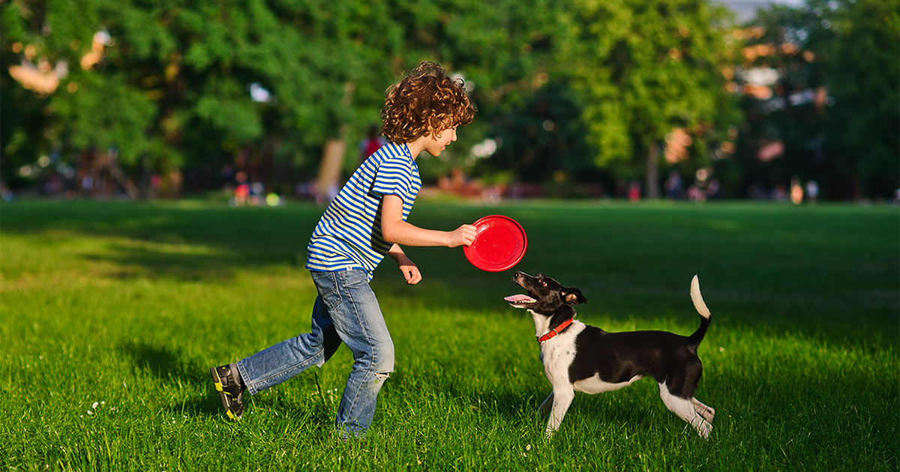

PRIMEROS PASOS PARA ESTABLECER UN VÍNCULO FUERTE
Los perros activos dependen de su entrenamiento para desarrollar vínculos fuertes con quienes trabajarán, aprender de forma segura habilidades nuevas y rendir al máximo. Sentar las bases durante la etapa de cachorro es importante para que en el futuro puedan desarrollar las habilidades más complejas que se esperan de los perros de trabajo, deporte y servicio.
